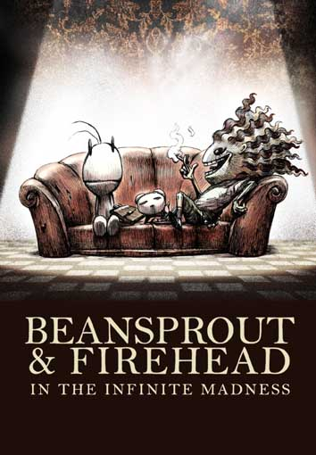

This book is the story of the boy name is "Firehead" who was escaping form his house because his stepfather and his stepmother was scared about his idea when he was young that he wanted to dominate the world, the others boy name is "Beanspout" who wake up at the midden that he meet "Firehead" at the first time and, the last is "Boobbib" who is Firehead's dog .
